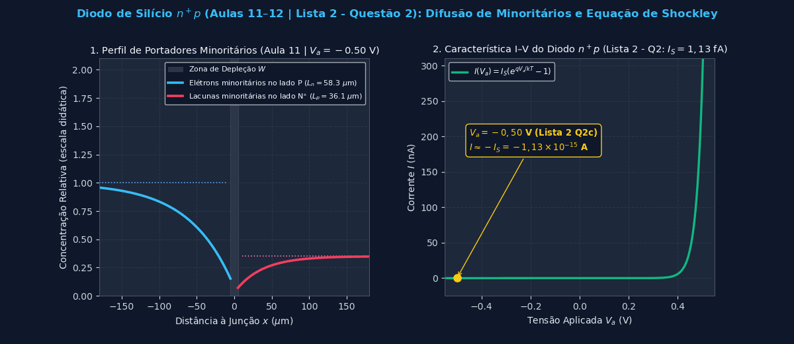
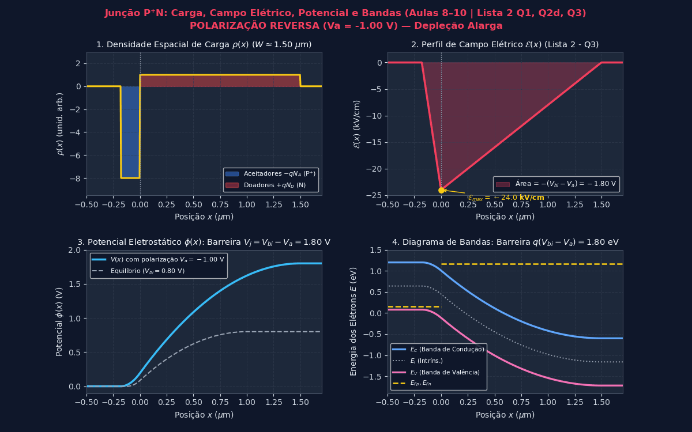
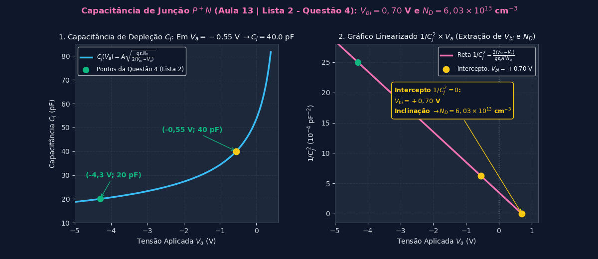
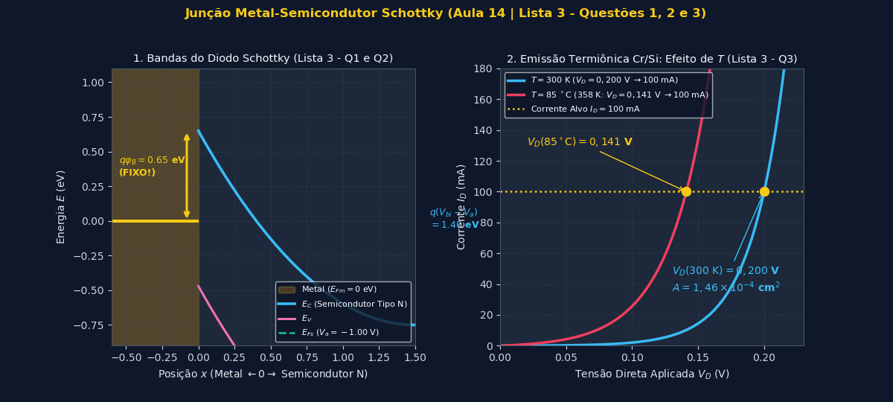
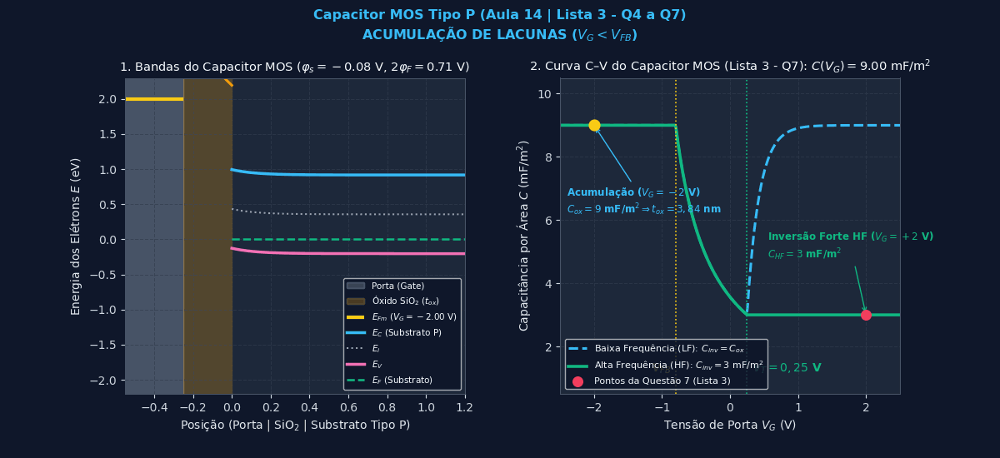

⚡ Laboratório Virtual de Semicondutores (JavaScript 60 FPS)
Escolha um dos 4 simuladores abaixo ou clique nos Botões de Questões (Presets) para carregar instantaneamente os parâmetros exatos de cada exercício da Lista 2 e da Lista 3!
📘 Lista 2 — Questão 1: Resistividade, Dopagem e Tensão de Built-in ($V_{bi}$)
📖 Referência nos Slides: Aula 8 (Slide 1) & Aula 9 (Slide 4) 📚 Referência no Livro: Kanaan Kano, Cap. 4 (Eq. 4.19) e Cap. 5 (Problema 5.3, pág. 152)
1. Quando juntamos um semicondutor Tipo P (muitas lacunas) com um Tipo N (muitos elétrons), os portadores difundem devido ao gradiente de concentração (Aula 8, Slide 1). Isso deixa íons fixos descobertos ($-qN_A$ no lado P e $+qN_D$ no lado N), criando um campo elétrico interno $\mathcal{E}$ que freia a difusão até atingir o equilíbrio térmico, estabelecendo uma barreira de potencial interna chamada tensão de built-in ($V_{bi}$).
2. Observação sobre o enunciado: Note que o enunciado impresso escreveu duas vezes "$\mu_p$" ($\mu_p = 1700$ e $\mu_p = 3600$). Este exercício é a tradução direta do Problema 5.3 do livro Kanaan Kano (pág. 152), onde o material é o Germânio (Ge) a $300\text{ K}$ ($n_i = 2,5\times 10^{13}\text{ cm}^{-3}$), cuja mobilidade de elétrons é $\mu_n = 3600\text{ cm}^2/(\text{V}\cdot\text{s})$ e a de lacunas é $\mu_p = 1700\text{ cm}^2/(\text{V}\cdot\text{s})$. Curiosidade matemática incrível: como $V_{bi}$ depende apenas do produto $N_A \cdot N_D = \frac{1}{q^2 \mu_n \mu_p \rho_n \rho_p}$, mesmo que alguém trocasse $\mu_n$ por $\mu_p$, o produto $N_A \cdot N_D$ e o valor final de $V_{bi}$ dão exatamente o mesmo resultado!
Passo 1: Encontrar as concentrações de dopantes $N_D$ e $N_A$ a partir das resistividades
Na região neutra tipo $n$, os elétrons são amplamente majoritários ($n_{0n} \approx N_D \gg p_{0n}$), e na região neutra tipo $p$, as lacunas são majoritárias ($p_{0p} \approx N_A \gg n_{0p}$). Do livro Kanaan Kano (Eq. 4.19), a condutividade $\sigma = 1/\rho$ em cada lado é:
Substituindo $q = 1,6 \times 10^{-19}\text{ C}$, $\rho_n = 1,0\ \Omega\cdot\text{cm}$, $\mu_n = 3600\text{ cm}^2\text{V}^{-1}\text{s}^{-1}$, $\rho_p = 0,1\ \Omega\cdot\text{cm}$ e $\mu_p = 1700\text{ cm}^2\text{V}^{-1}\text{s}^{-1}$:
Passo 2: Calcular a tensão de built-in ($V_{bi}$)
Da Aula 9, Slide 4 (obtida igualando a corrente de deriva e a corrente de difusão a zero no equilíbrio térmico, $J_p = qp\mu_p\mathcal{E} - qD_p\frac{dp}{dx} = 0$):
A $T = 300\text{ K}$, a tensão térmica vale $V_t = \frac{kT}{q} = (8,62\times 10^{-5}\text{ eV/K})\times 300\text{ K} = 0,02586\text{ V}$ (ou $0,0259\text{ V}$ / $0,026\text{ V}$ conforme Aula 14, Slide 19):
📘 Lista 2 — Questão 2: Correntes e Zona de Depleção no Diodo $n^+p$ de Silício
a) A corrente reversa de saturação desse diodo.
b) A corrente do diodo para polarização direta de $0,5\text{ V}$.
c) A corrente do diodo para polarização reversa de $0,5\text{ V}$.
d) A largura da zona de depleção com polarização reversa de $0,5\text{ V}$.
Dados: $\varepsilon_r$ do silício $= 11,7$, $\varepsilon_0 = 8,854\times 10^{-12}\text{ F/m}$, $D_n$ dos elétrons na região P do silício $= 34\text{ cm}^2/\text{s}$, $D_p$ das lacunas na região N do silício $= 13\text{ cm}^2/\text{s}$, $n_i = 10^{10}\text{ cm}^{-3}$.
📖 Referência nos Slides: Aula 10 (Slide 3), Aula 11 (Slides 1 a 6) & Aula 12 (Slide 6) 📚 Referência no Livro: Kanaan Kano, Cap. 5 (Problema 5.7, pág. 152)

Item (a): Corrente Reversa de Saturação ($I_S$)
Pela Aula 11 (Slides 2 e 6) e Aula 12 (Slide 6), resolvendo a equação da continuidade estacionária fora da zona de depleção ($\frac{d^2 p'}{dx^2} = \frac{p'}{D_p \tau_p}$), obtemos os comprimentos de difusão dos portadores minoritários:
Pela lei da ação das massas ($p_0 n_0 = n_i^2$, Aula 8 Slide 1), as concentrações de minoritários no equilíbrio térmico são:
Note como $n_{0p}$ (elétrons no lado P menos dopado) é $100\times$ maior que $p_{0n}$ (lacunas no lado $N^+$ muito dopado)! Aplicando a equação da corrente de saturação da Aula 12, Slide 6:
Item (b): Corrente para Polarização Direta ($V_a = +0,5\text{ V}$)
Pela equação ideal do diodo de Shockley (Aula 11, Slide 6):
Item (c): Corrente para Polarização Reversa ($V_a = -0,5\text{ V}$)
Para $V_a = -0,5\text{ V}$ (exatamente como explicado na Aula 11, Slide 6), o termo exponencial $e^{-0,5 / 0,02586} = 4,0\times 10^{-9} \ll 1$ é completamente desprezível frente a $1$. Portanto:
Item (d): Largura da Zona de Depleção com Polarização Reversa de $0,5\text{ V}$ ($V_a = -0,5\text{ V}$)
Primeiro convertemos a permissividade para $\text{F/cm}$ (já que $N_A$ e $N_D$ estão em $\text{cm}^{-3}$!): $$\varepsilon_0 = 8,854\times 10^{-12}\text{ F/m} = 8,854\times 10^{-14}\text{ F/cm} \implies \varepsilon_s = \varepsilon_r\,\varepsilon_0 = 11,7 \times 8,854\times 10^{-14} = 1,0359\times 10^{-12}\text{ F/cm}$$ Calculamos a tensão de built-in $V_{bi}$ (Aula 9, Slide 4): $$V_{bi} = \frac{kT}{q}\ln\left(\frac{N_A\,N_D}{n_i^2}\right) = 0,02586 \times \ln\left(\frac{10^{16}\times 10^{18}}{(10^{10})^2}\right) = 0,02586 \times \ln(10^{14}) = \mathbf{0,8336\text{ V}} \quad (0,8381\text{ V se } V_t = 0,026\text{ V})$$ Pela Aula 10, Slide 3, na polarização reversa $V_a = -0,5\text{ V}$, a barreira total é $V_j = V_{bi} - V_a = 0,8336 - (-0,5) = 1,3336\text{ V}$, e a largura da zona de depleção $W$ vale:
📘 Lista 2 — Questão 3: Cálculo da Polarização $V_a$ pelo Perfil de Campo Elétrico $\mathcal{E}(x)$
📖 Referência nos Slides: Aula 8 (Slide 3), Aula 9 (Slides 5 e 7) & Aula 10 (Slides 2 a 5)

Da eletrostática (Aula 8, Slide 3 e Aula 9, Slide 7), o potencial eletrostático é o negativo da integral do campo elétrico: $$\Delta \phi = -\int_{-x_p}^{x_n} \mathcal{E}_x\,dx = \text{Área do triângulo do campo elétrico!} = \frac{-\mathcal{E}_{max}\cdot W}{2}$$
- No equilíbrio térmico (painel central), essa área vale exatamente a barreira natural $V_{bi}$.
- No diodo polarizado (último painel), essa área vale a nova barreira da junção $V_j = V_{bi} - V_a$ (Aula 10, Slide 3).
- Como o módulo do campo máximo diminuiu de $16\text{ kV/cm}$ para $8\text{ kV/cm}$ (e a zona de depleção encolheu), sabemos imediatamente pela tabela da Aula 10, Slide 2 que o diodo está em Polarização Direta ($V_a > 0$)!
Passo 1: Calcular $V_{bi}$ a partir do triângulo em equilíbrio (painel central)
Olhando o eixo horizontal $x'$ no painel central da figura da Lista 2: cada divisão entre os traços (ticks) vale $1\ \mu\text{m}$ (como indicado entre os traços `0` e `1 µm`). No equilíbrio, a base do triângulo na região $N$ vai da junção metalúrgica até o primeiro traço (`0`), portanto tem largura: $$W_0 \approx x_{n0} = 1\ \mu\text{m} = 1,0 \times 10^{-4}\text{ cm}$$ Com $\mathcal{E}_{max,0} = -16\text{ kV/cm} = -16 \times 10^3\text{ V/cm}$, a equação da Aula 9, Slide 7 fornece:
Passo 2: Calcular a nova barreira $V_j = V_{bi} - V_a$ no diodo polarizado (último painel)
Na aproximação de depleção para uma junção unilateral $P^+N$ (Aula 9, Slide 5), o campo máximo é diretamente proporcional à largura de depleção: $|\mathcal{E}_{max}| = \frac{q N_D x_n}{\varepsilon_s}$.
Como o campo máximo caiu exatamente pela metade (de $-16\text{ kV/cm}$ para $-8\text{ kV/cm}$), a largura da zona de depleção também caiu pela metade:
$$W = \frac{W_0}{2} = 0,5\ \mu\text{m} = 0,5 \times 10^{-4}\text{ cm}$$
(O que confere visualmente com o último painel, onde o vértice `0` recuou para a metade da primeira divisão!). Assim, a área do novo triângulo vale $\frac{1}{2}\times\frac{1}{2} = \frac{1}{4}$ da área original:
📘 Lista 2 — Questão 4: Capacitância de Depleção em Diodo $P^+N$
a) $N_D$.
b) $V_{bi}$.
📖 Referência nos Slides: Aula 13 (Slides 1 e 2) 📚 Referência no Livro: Kanaan Kano, Cap. 7 (Problema 7.6, pág. 206)

Passo 1: Equação da Capacitância de Junção $C_j$ (Aula 13, Slide 1)
Em polarização reversa, a zona de depleção funciona como um capacitor de placas paralelas cuja distância entre as placas é a largura $W(V_a)$. Da Aula 13, Slide 1, para um diodo unilateral $P^+N$ ($N_A \gg N_D$):
Passo 2: Determinar $V_{bi}$ (Item b) usando a razão entre as duas capacitâncias
Note que na expressão de $C_j$, os termos $A, q, \varepsilon_s, N_D$ são constantes! Elevando ao quadrado a razão entre $C_{j2} = 40\text{ pF}$ ($V_{a2} = -0,55\text{ V}$) e $C_{j1} = 20\text{ pF}$ ($V_{a1} = -4,3\text{ V}$), todas as constantes se cancelam:
Passo 3: Determinar a concentração de doadores $N_D$ (Item a)
Isolando $N_D$ na equação de $C_j$ e substituindo o ponto $(V_{a2} = -0,55\text{ V}, C_{j2} = 40\times 10^{-12}\text{ F})$ com $V_{bi} = 0,70\text{ V}$, $A = 2\times 10^{-2}\text{ cm}^2$, $q = 1,6\times 10^{-19}\text{ C}$ e $\varepsilon_s = 11,7 \times 8,854\times 10^{-14} = 1,0359\times 10^{-12}\text{ F/cm}$:
📙 Lista 3 — Questão 1: Efeito da Dopagem $N_D$ sobre $V_{bi}$ e $\varphi_B$ no Diodo Schottky
📖 Referência nos Slides: Aula 14 (Slides 2 e 3) 📚 Referência no Livro: Kanaan Kano, Cap. 10 (Seção 10.1 — Metal-Semiconductor Junctions)

Análise Física e Equações da Aula 14 (Slide 3)
-
1. O que acontece com a barreira $\varphi_B$? $\rightarrow$ FICA CONSTANTE ($\varphi_B = 0,65\text{ V}$).
Pela equação da Aula 14, Slide 3: $$q\varphi_B = q\varphi_m - q\chi_s$$ A barreira de potencial vista pelos elétrons do metal para o semicondutor ($\varphi_B$) depende exclusivamente da função trabalho do metal ($q\varphi_m$, uma propriedade intrínseca do metal escolhido) e da afinidade eletrônica do semicondutor ($q\chi_s = 4,05\text{ eV}$ para o silício, que é a distância entre o fundo da banda de condução $E_C$ e o nível de vácuo). Nenhuma dessas duas grandezas depende da concentração de dopantes $N_D$! Logo, ao alterar $N_D$, $\varphi_B$ permanece constante. -
2. O que acontece com a tensão de built-in $V_{bi}$? $\rightarrow$ AUMENTA!
Pela equação da Aula 14, Slide 3: $$qV_{bi} = q\varphi_m - q\varphi_s = q\varphi_B - (E_C - E_F)$$ No semicondutor tipo N, o nível de Fermi $E_F$ está abaixo de $E_C$ por uma distância $E_C - E_F = kT\ln\left(\frac{N_C}{N_D}\right)$ (ou, em relação ao nível intrínseco, $E_F - E_i = kT\ln\left(\frac{N_D}{n_i}\right)$).
Quando aumentamos a dopagem de $N_{D1} = 10^{15}\text{ cm}^{-3}$ para $N_{D2} = 4,8\times 10^{15}\text{ cm}^{-3}$, há mais elétrons na banda de condução, fazendo o nível de Fermi $E_F$ subir em direção a $E_C$. Isso diminui a função trabalho do semicondutor $q\varphi_s = q\chi_s + (E_C - E_F)$, aumentando a diferença de energia entre o nível de Fermi do semicondutor e o do metal antes do contato! Portanto, maior entortamento de bandas é necessário para alinhar os níveis de Fermi, e $V_{bi}$ aumenta!
Cálculo complementar (bônus): O aumento exato vale $\Delta V_{bi} = \frac{kT}{q}\ln\left(\frac{4,8\times 10^{15}}{10^{15}}\right) = 0,02586 \times \ln(4,8) = +0,0406\text{ V}$, levando $V_{bi}$ de $0,40\text{ V}$ para $\mathbf{0,4406\text{ V}}$.
📙 Lista 3 — Questão 2: Barreiras Energéticas do Diodo Schottky sob Polarização
a) polarizada diretamente com $0,2\text{ V}$.
b) polarizada reversamente com $5\text{ V}$.
📖 Referência nos Slides: Aula 14 (Slides 3, 4 e 5)
Como o metal é um condutor perfeito repleto de elétrons livres, não existe queda de tensão nem zona de depleção dentro do metal: toda a tensão externa aplicada $V_a$ cai sobre a zona de depleção do semicondutor!
- Por isso, na interface $x=0$, o degrau entre o nível de Fermi do metal $E_{Fm}$ e o topo da banda de condução do semicondutor $E_C(0)$ é fixo: a barreira Metal $\rightarrow$ Semicondutor ($q\varphi_B$) não muda com a polarização!
- Já a barreira Semicondutor $\rightarrow$ Metal (que no equilíbrio vale $qV_{bi}$) passa a valer $q(V_{bi} - V_a)$ (ou $q(V_{bi} + V_R)$ na notação dos Slides 4 e 5 da Aula 14).
• Barreira Semicondutor $\rightarrow$ Metal: $qV_{ef} = q(V_{bi} - V_a) = 0,40\text{ eV} - 0,20\text{ eV} = \mathbf{0,20\text{ eV}}$ (diminui, facilitando a injeção de elétrons do semicondutor para o metal!).
• Barreira Metal $\rightarrow$ Semicondutor: $q\varphi_B = \mathbf{0,65\text{ eV}}$ (permanece constante!).
b) Polarização Reversa com $5\text{ V}$ ($V_a = -5,0\text{ V}$ ou $V_R = +5,0\text{ V}$, Aula 14, Slide 4 e 5 - direita):
• Barreira Semicondutor $\rightarrow$ Metal: $qV_{ef} = q(V_{bi} - V_a) = q(V_{bi} + V_R) = 0,40\text{ eV} + 5,00\text{ eV} = \mathbf{5,40\text{ eV}}$ (aumenta drasticamente, bloqueando a passagem de elétrons do semicondutor para o metal!).
• Barreira Metal $\rightarrow$ Semicondutor: $q\varphi_B = \mathbf{0,65\text{ eV}}$ (permanece constante!).
📙 Lista 3 — Questão 3: Projeto de Área e Efeito da Temperatura no Diodo Schottky Cr/Si
Dados: $A^* = 120\text{ A}\cdot\text{cm}^{-2}\cdot\text{K}^{-2}$, Cromo $q\varphi_m = 4,5\text{ eV}$ (e da folha de constantes: $q\chi_s = 4,05\text{ eV}$, $k = 8,62\times 10^{-5}\text{ eV/K}$).
📖 Referência nos Slides: Aula 14 (Slides 3, 5 e 19)
Passo 1: Calcular a altura da barreira Schottky $q\varphi_B$ (Cromo / Silício)
Da Aula 14, Slide 3 e Slide 19, com $q\varphi_m(\text{Cr}) = 4,50\text{ eV}$ e $q\chi_s(\text{Si}) = 4,05\text{ eV}$:
Passo 2: Determinar a Área $A$ do diodo a $T_1 = 300\text{ K}$
Pelas equações de emissão termiônica da Aula 14, Slide 5:
A $T_1 = 300\text{ K}$, temos $kT_1 = (8,62\times 10^{-5}\text{ eV/K})\times 300\text{ K} = 0,02586\text{ eV}$. Para $V_D = 0,20\text{ V}$ e $I_D = 100\text{ mA} = 0,10\text{ A}$:
Passo 3: Determinar o novo potencial $V_D$ a $T_2 = 85\ ^\circ\text{C} = 358\text{ K}$ (ou $358,15\text{ K}$)
A $T_2 = 85 + 273 = 358\text{ K}$, a energia térmica sobe para $kT_2 = (8,62\times 10^{-5})\times 358 = 0,03086\text{ eV}$. Com a temperatura maior, os elétrons têm muito mais energia térmica para vencer a barreira $q\varphi_B$, fazendo a corrente reversa de saturação $I_S$ crescer fortemente:
📙 Lista 3 — Questão 4: Campo Elétrico no Óxido de um Capacitor MOS Tipo N
📖 Referência nos Slides: Aula 14 (Slides 8, 11, 13, 16 e 17) & Tabela da Lista 3 (pág. 2)
Passo 1: Identificar o regime de operação do Capacitor MOS em $V_G = 0\text{ V}$
Consultando diretamente a Tabela da Lista 3 (página 2) / Aula 14 (Slide 17) para um substrato Tipo N:
- Acumulação (Tipo N): ocorre quando $V_{FB} < V_G$.
- Como $V_{FB} = -1\text{ V}$ e aplicamos $V_G = 0\text{ V}$, temos $0\text{ V} > -1\text{ V}$ ($V_G > V_{FB}$) $\implies$ O capacitor MOS está operando em ACUMULAÇÃO!
- Pela terceira linha da tabela da Lista 3, em Acumulação o potencial de superfície no semicondutor é desprezível ($\varphi_s \approx 0$)!
Passo 2: Calcular o módulo do campo elétrico no óxido ($\mathcal{E}_{ox}$)
A relação geral de tensões no capacitor MOS é $V_G - V_{FB} = V_{ox} + \varphi_s$. Como $\varphi_s \approx 0$ na acumulação, toda a tensão efetiva $V_G - V_{FB}$ cai diretamente sobre o óxido de espessura $t_{ox} = 5\text{ nm} = 5\times 10^{-9}\text{ m} = 5\times 10^{-7}\text{ cm}$:
(Obs.: Mesmo que alguém usasse a fórmula de carga da tabela, $Q_A = |V_{FB}-V_G|C_{ox}$, pela Lei de Gauss $\mathcal{E}_{ox} = \frac{Q_A}{\varepsilon_{ox}} = \frac{|V_{FB}-V_G|(\varepsilon_{ox}/t_{ox})}{\varepsilon_{ox}} = \frac{|V_G-V_{FB}|}{t_{ox}} = 2\times 10^8\text{ V/m}$, que independe de $\varepsilon_{ox}$!)
Passo 3: Determinar o sentido do campo elétrico no óxido
Como o substrato é Tipo N e está em acumulação ($V_G = 0\text{ V} > V_{FB} = -1\text{ V}$), os portadores majoritários acumulados na superfície do semicondutor (interface $\text{Si/SiO}_2$) são elétrons (carga negativa $-Q_A$), enquanto no eletrodo de porta acumulam-se cargas positivas ($+Q_A$).
Como as linhas de campo elétrico apontam sempre das cargas positivas (porta/óxido) para as cargas negativas (superfície do semicondutor), o sentido do campo elétrico é:
📙 Lista 3 — Questão 5: Diferença de Função Trabalho ($q\varphi_{ms}$) em Estrutura MOS
📖 Referência nos Slides: Aula 14 (Slides 11, 12 e Tabela do Slide 19)
Passo 1: Função trabalho do eletrodo de porta — Silício fortemente dopado com Boro ($P^+$-Si)
O Boro (grupo III da tabela periódica) é uma impureza aceitadora no silício, formando um semicondutor tipo P. Portanto, "silício fortemente dopado com boro" é o polissilício $P^+$-Si!
Consultando a tabela da Aula 14, Slide 19 (ou lembrando que em um semicondutor degenerado $P^+$ o nível de Fermi coincide com o topo da banda de valência $E_F \approx E_V$, logo $q\varphi_m = q\chi_s + E_g = 4,05 + 1,12 = 5,17\text{ eV}$):
Passo 2: Função trabalho do substrato de Silício Tipo P ($N_A = 10^{16}\text{ cm}^{-3}$)
Olhando o diagrama de bandas da Aula 14, Slide 11 (canto superior direito), a distância entre o nível de vácuo ($0$) e o nível de Fermi $E_F$ no substrato tipo P é a soma de três parcelas: $$q\varphi_s = q\chi_s + \frac{E_g}{2} + q\varphi_F$$ onde $\varphi_F$ é o potencial de Fermi do substrato tipo P (Aula 9, Slide 3):
Passo 3: Diferença de Função Trabalho ($q\varphi_{ms}$)
📙 Lista 3 — Questão 6: Tipo e Densidade de Portadores na Inversão Forte do Capacitor MOS
📖 Referência nos Slides: Aula 14 (Slides 9, 15, 17 e 18) & Tabela da Lista 3 (pág. 2)
Passo 1: Determinar o regime de operação e o tipo dos portadores na superfície
Pela Tabela da Lista 3 (página 2) / Aula 14 (Slide 17), para um substrato Tipo P:
- Como a tensão de porta aplicada é $V_G = 5\text{ V}$ e a tensão de limiar é $V_T = 0,25\text{ V}$, temos $V_G > V_T$ ($5\text{ V} > 0,25\text{ V}$), o que corresponde à coluna Inversão Forte!
- Num substrato Tipo P (onde os portadores majoritários no corpo são lacunas), a tensão fortemente positiva na porta ($V_G = +5\text{ V}$) repele as lacunas e atrai minoritários para a interface $\text{Si/SiO}_2$, formando um canal superficial invertido (tipo N). Portanto, os portadores móveis na superfície são ELÉTRONS!
Passo 2: Calcular a capacitância do óxido $C_{ox}$, a carga de inversão $|Q_I|$ e a densidade de elétrons $n_s$
Da última linha da coluna Inversão Forte da Tabela da Lista 3 (e Aula 14, Slide 9 e 17): $$|Q_I| = |V_G - V_T|\,C_{ox}, \qquad \text{onde} \qquad C_{ox} = \frac{\varepsilon_{ox}}{t_{ox}}$$ E a densidade superficial de portadores (número de elétrons por unidade de área) é dada dividindo a carga superficial $|Q_I|$ pela carga elementar $q = 1,6\times 10^{-19}\text{ C}$: $$n_s = \frac{|Q_I|}{q} = \frac{|V_G - V_T|\,C_{ox}}{q}$$
Na página 2 da Lista 3 foi impresso $\varepsilon_{ox} = 3,9 \times 8,85\times 10^{-1}\text{ F/m} = 3,4515\times 10^{-10}\text{ F/m}$ (com um erro de digitação no expoente, pois $3,9 \times 8,85\times 10^{-12}\text{ F/m} = \mathbf{3,4515\times 10^{-11}\text{ F/m}}$, como consta corretamente no Slide 18 da Aula 14: $\varepsilon_{ox} = 3,45\times 10^{-11}\text{ F/m}$). Abaixo apresentamos o resultado com ambos os valores para você ter 100% de garantia na prova!
Cálculo 2 (Usando literalmente o expoente impresso na Lista 3: $\varepsilon_{ox} = 3,4515\times 10^{-10}\text{ F/m}$): $$C_{ox} = 2,301\times 10^{-2}\text{ F/m}^2 \implies |Q_I| = \mathbf{1,093\times 10^{-1}\text{ C/m}^2} \implies n_s = \mathbf{6,831 \times 10^{17}\text{ m}^{-2}} \ (6,831\times 10^{13}\text{ cm}^{-2})$$
📙 Lista 3 — Questão 7: Extração de $t_{ox}$ e Tipo de Substrato pela Curva $C$-$V$ em Alta Frequência
📖 Referência nos Slides: Aula 14 (Slides 8, 13, 15, 17 e 18) & Tabela da Lista 3 (pág. 2)

Parte 1: Determinar o tipo de dopagem (P ou N) do substrato de silício
O enunciado informa que a estrutura está em acumulação para $V_G = -2\text{ V}$ (tensão negativa) e em inversão forte para $V_G = +2\text{ V}$ (tensão positiva).
Olhando a Tabela da Lista 3 (página 2) e o gráfico da Aula 14, Slide 8:
- Para $V_G$ negativo ($V_G < V_{FB}$), o potencial negativo da porta atrai cargas positivas (lacunas) para a interface $\text{Si/SiO}_2$. Se acumular lacunas significa acumular portadores majoritários, então os portadores majoritários do substrato são lacunas!
- Para $V_G$ positivo ($V_G > V_T$), o potencial positivo da porta atrai elétrons (minoritários) formando a camada de inversão.
- Portanto, o substrato de silício é TIPO P!
Parte 2: Determinar a espessura do óxido de porta ($t_{ox}$)
Pela coluna Acumulação da Tabela da Lista 3 (página 2), no regime de acumulação a capacitância medida por unidade de área é a própria capacitância do óxido: $$C_{acc} = C_{ox} = \frac{\varepsilon_{ox}}{t_{ox}} = 9\text{ mF/m}^2 = 9,0 \times 10^{-3}\text{ F/m}^2$$ Isolando $t_{ox}$:
Bônus Didático (Por que a capacitância cai para $3\text{ mF/m}^2$ em Alta Frequência na Inversão Forte?):
Em alta frequência (HF), os elétrons da camada de inversão (gerados termicamente de forma lenta) não conseguem acompanhar a oscilação rápida do sinal AC. Assim, a variação de carga ocorre na borda da zona de depleção máxima $w_{d\text{-}inv}$, colocando $C_{ox}$ em série com a capacitância de depleção $C_d = \varepsilon_s / w_{d\text{-}inv}$:
$$\frac{1}{C_{HF}} = \frac{1}{C_{ox}} + \frac{w_{d\text{-}inv}}{\varepsilon_s} \implies w_{d\text{-}inv} = \varepsilon_s\left(\frac{1}{3\times 10^{-3}} - \frac{1}{9\times 10^{-3}}\right) = 1,0443\times 10^{-10} \times \frac{2000}{9} = \mathbf{23,21\text{ nm}}$$
🧭 Mapa Mental e Formulário Geral para a Prova (Aulas 8 a 14 + Kanaan Kano)
1. Eletrostática e Equilíbrio da Junção PN (Aulas 8 e 9)
• Relação Campo-Potencial-Energia (Aula 8, Slides 3–6):
$$\mathcal{E} = -\frac{d\phi}{dx} = \frac{1}{q}\frac{dE_C}{dx} = \frac{1}{q}\frac{dE_i}{dx}, \qquad \phi = -\frac{E}{q}$$
• Equação de Poisson e Aproximação de Depleção (Aula 9, Slide 5):
$$\frac{d\mathcal{E}}{dx} = \frac{\rho}{\varepsilon_s} = \frac{q}{\varepsilon_s}(p - n + N_D - N_A)$$
• Neutralidade de Cargas e Campo Máximo (Aula 9, Slide 5):
$$N_A\,x_{p0} = N_D\,x_{n0}, \qquad \mathcal{E}_{max} = -\frac{q\,N_D\,x_{n0}}{\varepsilon_s} = -\frac{q\,N_A\,x_{p0}}{\varepsilon_s}$$
• Tensão de Built-in e Área do Triângulo (Aula 9, Slides 4 e 7):
$$V_{bi} = \frac{kT}{q}\ln\left(\frac{N_A\,N_D}{n_i^2}\right) = \frac{-\mathcal{E}_{max}\,W}{2}$$
2. Junção PN Polarizada e Corrente de Shockley (Aulas 10, 11 e 12)
• Barreira sob Polarização $V_a$ (Aula 10, Slide 3):
$$V_j = V_{bi} - V_a \quad (V_a > 0:\text{ Direta} \mid V_a < 0:\text{ Reversa})$$
• Largura da Zona de Depleção (Aula 10, Slide 3):
$$W = \sqrt{\frac{2\varepsilon_s}{q}\left(\frac{N_A + N_D}{N_A\,N_D}\right)(V_{bi} - V_a)}$$
• Equação de Shockley e Corrente de Saturação (Aula 11, Slide 6):
$$I = I_S\left(e^{\frac{qV_a}{kT}} - 1\right), \quad I_S = A\,q\,n_i^2\left[\frac{D_p}{L_p\,N_D} + \frac{D_n}{L_n\,N_A}\right]$$
onde $L_p = \sqrt{D_p\tau_p}$, $L_n = \sqrt{D_n\tau_n}$ e $D = \frac{kT}{q}\mu$ (Relação de Einstein).
3. Capacitâncias e Chaveamento do Diodo (Aula 13)
• Capacitância de Junção / Depleção (Reversa - Aula 13, Slide 1):
$$C_j = \frac{\varepsilon_s\,A}{W} = A\left[\frac{q\,\varepsilon_s\,N_A\,N_D}{2(N_A + N_D)(V_{bi} - V_a)}\right]^{1/2}$$
• Capacitância Difusiva (Direta - Aula 13, Slide 3):
$$C_S = \frac{dQ_B}{dV_a} = \frac{q^2}{kT}A\,p_{0n}\,L_p\,e^{\frac{qV_a}{kT}}$$
• Tempo de Armazenamento no Turn-Off (Aula 13, Slide 6):
$$t_s = \tau_p\ln\left[1 + \frac{I_F}{I_R}\right]$$
4. Diodo Schottky e Capacitor MOS (Aula 14)
• Barreira Schottky e Built-in (Aula 14, Slide 3):
$$q\varphi_B = q\varphi_m - q\chi_s \ (\text{fixa!}), \qquad qV_{bi} = q\varphi_m - q\varphi_s$$
• Emissão Termiônica no Schottky (Aula 14, Slide 5):
$$I_D = I_S\left(e^{\frac{qV_D}{kT}} - 1\right), \qquad I_S = A\,A^*\,T^2\,e^{-\frac{q\varphi_B}{kT}}$$
• Capacitor MOS (Aula 14, Slides 11–19):
$$C_{ox} = \frac{\varepsilon_{ox}}{t_{ox}}, \qquad \frac{1}{C_{HF}} = \frac{t_{ox}}{\varepsilon_{ox}} + \frac{w_d}{\varepsilon_s}$$
$$|Q_A| = |V_{FB}-V_G|C_{ox}, \quad |Q_I| = |V_G - V_T|C_{ox}$$
🐍 Galeria de Animações Geradas em Python (`gerar_animacoes_python.py`)
Todas as animações abaixo foram geradas na pasta animacoes/ pelo script Python
gerar_animacoes_python.py utilizando numpy, matplotlib.animation e Pillow,
e os cálculos numéricos completos estão em resolver_listas_mic01.py.